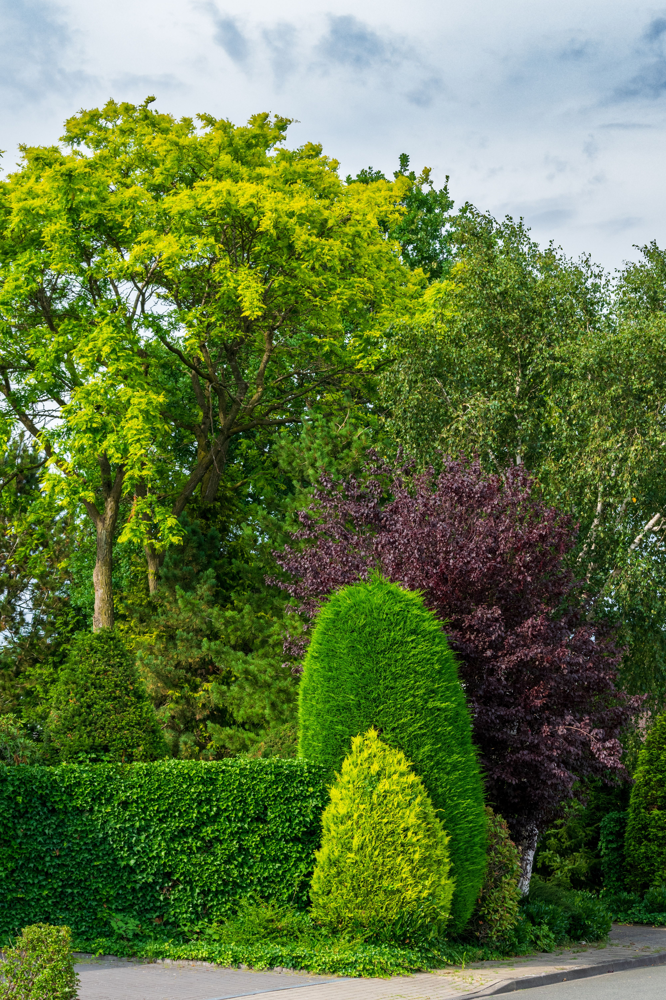
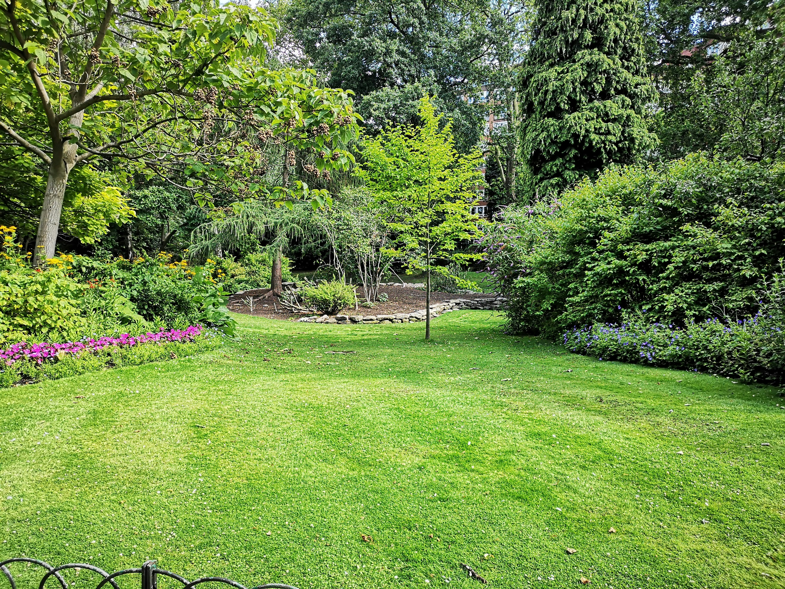
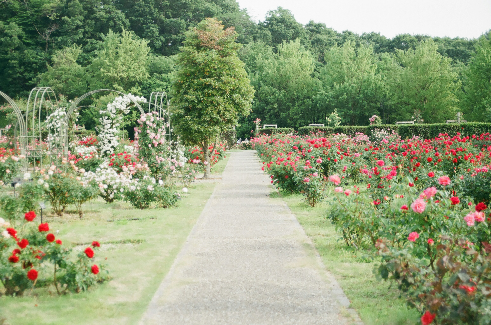
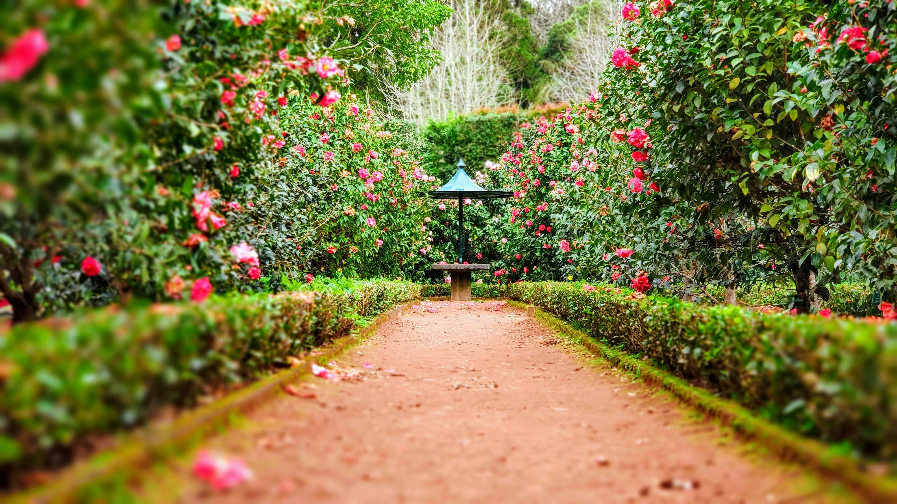

Entretien de Jardin
Entretien régulier et saisonnier de vos espaces verts.
Paysagiste passionné spécialisé dans l'entretien, l'aménagement et la valorisation de vos espaces verts.
Satisfaction client
Zone d'intervention
Approche durable
Herb'bivorre accompagne particuliers et professionnels dans tous leurs projets d'aménagement paysager.
Entretien régulier et saisonnier de vos espaces verts.
Conception sur mesure adaptée à votre terrain.
Haies esthétiques et parfaitement entretenues.
Travaux sécurisés sur arbres et grands sujets.
Suppression d'arbres en toute sécurité.
Mise en conformité et prévention des risques.
Pelouses soignées toute l'année.
Installation et optimisation de réseaux d'arrosage.
Arbres, arbustes, massifs et végétaux adaptés.
Création de potagers productifs et esthétiques.
Solutions écologiques inspirées des écosystèmes naturels.
Évacuation et valorisation des déchets végétaux.
Basée à L'Isle-sur-la-Sorgue, Herb'bivorre accompagne les particuliers et professionnels dans la création et l'entretien de jardins durables.
Notre approche privilégie la biodiversité, les aménagements naturels et les solutions respectueuses de l'environnement.




Travail impeccable et jardin transformé.
Équipe sérieuse et très professionnelle.
Excellents conseils pour notre potager.